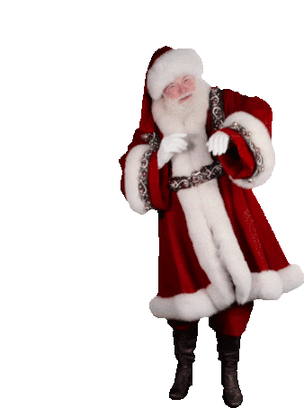

Start
UpDown
Rotate
start:
Sunflower
Cam
Sky
Rose
Tap screen to change direction :)
START

SANTA SAYS CLICK THE ARROW TO START
SANTA SAYS
CLICK HERE TO START
SOC presents
A Christmas Party 2023
START
Have fun, St. Peter's SOC team.🎄⛄